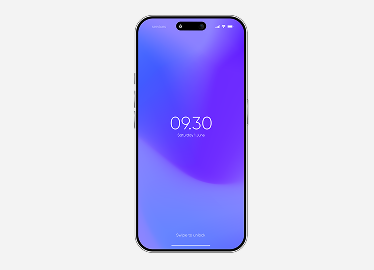
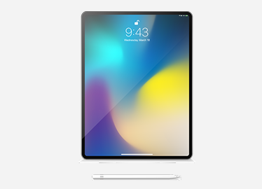
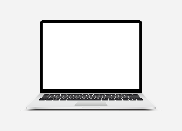
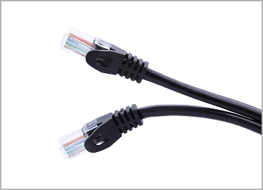
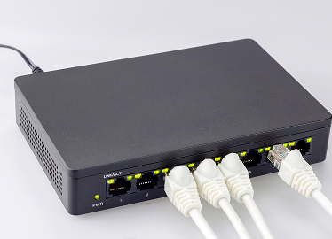
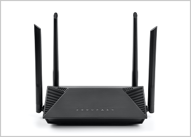
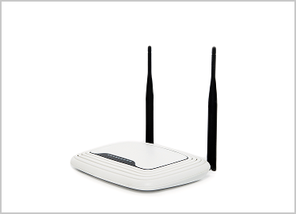

개념 학습
네트워크의 구성 요소
네트워크를 통해 데이터를 주고받으려면 여러 대의 컴퓨팅 시스템, 데이터의 통로인 전송 매체, 데이터를 목적지까지
전송하는 네트워크 장비가 필요하다.
네트워크를 통해 데이터를 주고받는 기기이다. 스마트폰, 태블릿 PC, 노트북 등이 있다.

스마트폰

태블릿 PC

노트북 컴퓨터
컴퓨팅 시스템 사이에서 데이터가 이동하는 통로를 의미한다. 무선 매체와 유선 매체가 있다.
무선 매체(전파)

유선 매체(UTP 케이블)
컴퓨팅 시스템 사이에서 주고받는 데이터를 목적지까지 정확하게 전송하는 장비이다. 스위치, 라우터, 공유기 등이 있다.

스위치

라우터

공유기